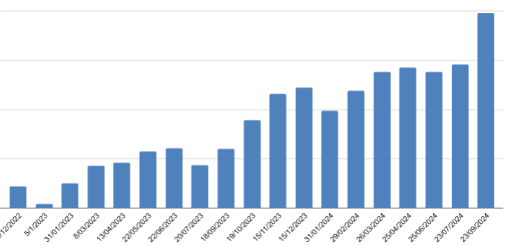
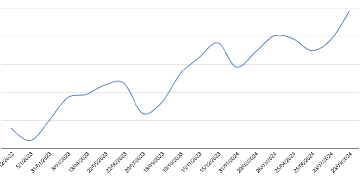

As part of a strategic expansion, I led the development of a new vertical on our website, targeting long-tail keywords related to templates and their use cases. The goal was to drive highly qualified organic traffic and maximize conversion rates to user registrations.
The project was built using Drupal and Gatsby, leveraging server-side rendering (SSR) for optimal performance. To ensure scalability, we developed a fully automated content management system, handling:
The vertical quickly became one of the top-performing traffic sources, reaching 200K+ organic visits per month with continuous positive growth. Challenges & Solutions:
This project demonstrates the power of programmatic SEO combined with data-driven content automation, proving that a structured approach can yield highly scalable and conversion-focused results.
Clics evolution
Impressions evolution
